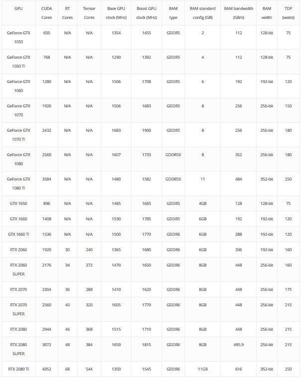
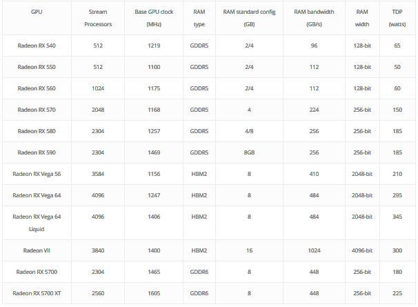
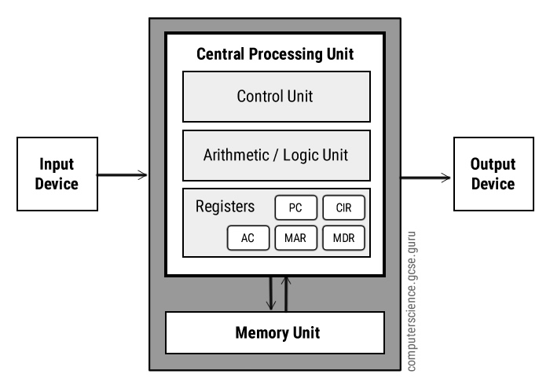
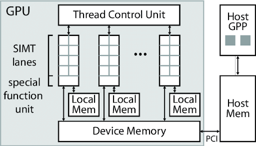
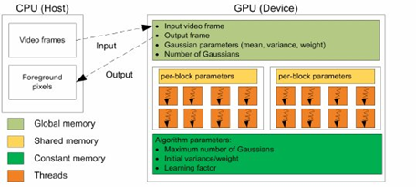

The GPU is a much more powerful processor as it breaks down the most complex calculations and finds solutions through the process of parallel processing. Because of the need to go through a lot of data while doing calculations, the GPUs have a faster and more advanced memory interface in comparison with a CPU.
GPU TYPES
There are different types of GPU available to users today and users can select the GPU that they want, depending on the purpose of work.
Integrated vs Discrete graphics
Single vs Multi GPU
GPU Comparisons: NVIDIA AMD
NVIDIA and AMD are compatible with any processors. To have a well design system, make sure that the processor is powerful enough to keep up with the GPU you are selecting
Stream Processor/Cores
NVIDIA

AMD
Hardware differences between GPUs and CPUs
Unlike a CPU, a GPU has many cores, sometimes in the hundreds, even up to the thousands, allowing for far more actions to be completed at the same time. GPUs are also well-versed in completing the same task repetitively relatively quickly. However, GPUs have far fewer actions that they can complete, often boiling down to the simplest of tasks. Examples of tasks where GPUs are preferred include Machine Learning, large data processing, and Bitcoin mining.
 As can be seen in the images above, GPUs and CPUs have different architectures to fit their differing roles. Generally, GPUs have only one I/O port, referred to as the PCI, while the CPU has separate I/O ports. The CPU also outputs from the CPU itself, while the GPU’s PCI port is linked directly to the memory registers. As previously stated, GPUs also have more cores than CPUs, to allow for more tasks to be completed at once. A GPU also relies on a host to handle all I/O, as well as to provide its instructions, while a CPU takes in the instructions directly, and will likely be the GPU's host in the first place.
How does a GPU handle an image?
The above image shows how a GPU translates a video file into an video that is shown on the screen, following the Gaussian Method.
It starts by receiving the frame data from the host. It then detects the Gaussian distributions of variables within the frame, as well as any necessary data about these distributions. Then, it quickly calculates the initial variance and weight of the frame, as well as the maximum possible number of variances. Once these calculations are complete, it's able to use a